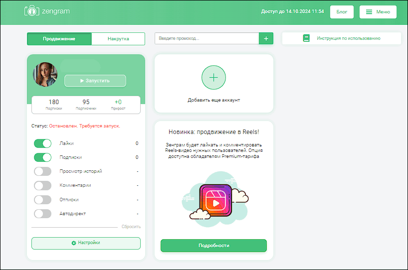
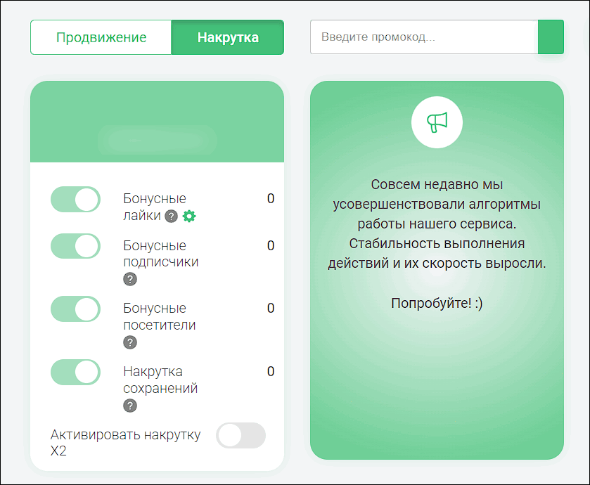
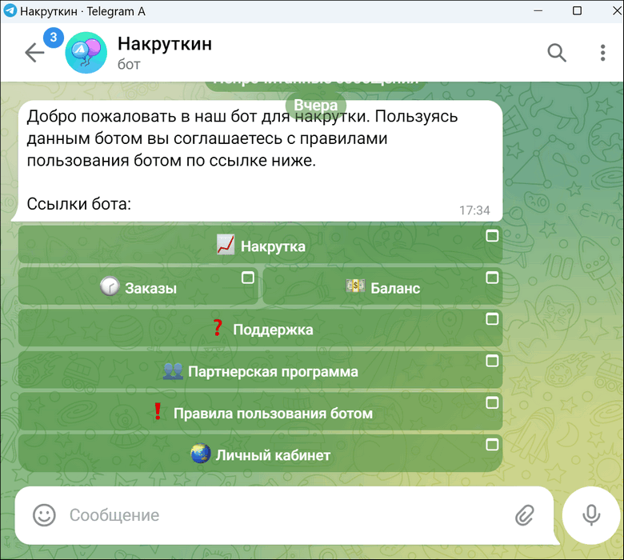
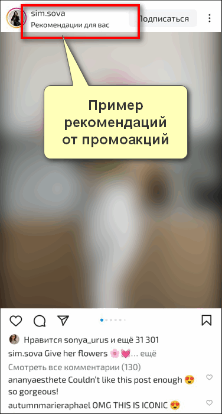
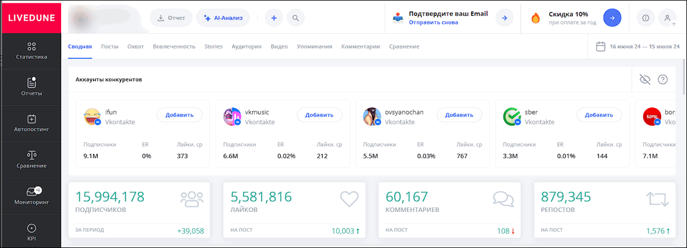
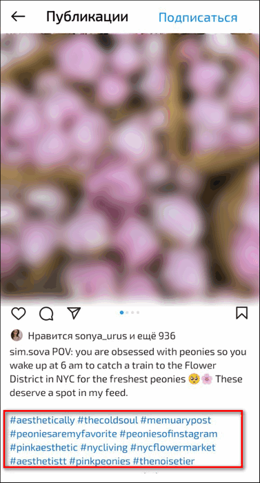
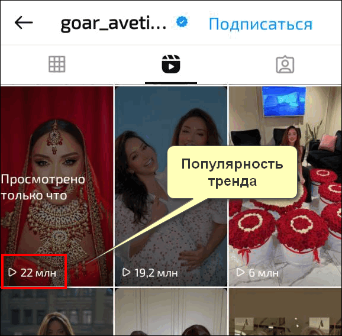

Стратегия естественного продвижения в Инстаграм: Рейтинг 3х лучших способов

- Что включает естественное продвижение в Инстаграм*
- Инструменты продвижения для блогеров и обычных пользователей
- №1 Сервис Zengram
- №2 ТГ боты для продвижения Инстаграм*
- №3 Официальные промоакции
- Целевая аудитория и позиционирование в Инстаграм*
- Подключение других сервисов
- Работа с публикациями и статистикой
- Связь с конкурентами и совместные публикации
- Общение с подписчиками в Инстаграм*
- Хештеги и геометки
- Новые форматы и тренды
- Публикации не попадают в ТОП: что делать
- 10 вопрос - ответов по продвижению в Инстаграм*
Для вывода записей в ТОП нужна стратегия продвижения в Инстаграме*. Она включает: регулярное добавление новых постов, рост качества, общение с аудиторией. Нельзя забывать об онлайн-мероприятиях, которые повысят узнаваемость и заинтересованность подписчиков.
Что включает естественное продвижение в Инстаграм*
Естественное продвижение – это отсутствие вспомогательных инструментов продвижения. Только стандартные, без накрутки и масштабных розыгрышей с партнерами. Это развитие страницы, сообщества и блога через контент, хештеги и геометки.
➡️ К естественному продвижению относится:
- регулярные посты и Сторис;
- подготовка биографии, названия таким образом, чтобы посетители понимали о чем блог;
- интересные и полезные тексты;
- актуальное с мини-историями;
- свои и общие хештеги, геотеги над постами.
Как один из видов естественного продвижения – промоакции, запущенные в самой социальной сети. Реклама будет показана потенциальной аудитории, а владелец сообщества или блога должен самостоятельно настроить таргет, потренироваться и протестировать несколько креативов.
Инструменты продвижения для блогеров и обычных пользователей
К другим методам продвижения, которые могут быть иногда задействованы, относится накрутка. Такие методы стоит применять в случае, если на странице уже есть аудитория и искусственный прирост будет не так заметен. Хотя многие сервисы и приложения поддерживают функцию «живые исполнители»: люди, со своими публикациями, аватарками и подписками. Эта услуга дает возможность получить активную аудиторию, даже воспользовавшись накруткой.
№1 Сервис Zengram
Если нужно заказать продвижение, то зайдите на сайт Zengram, ведь в его функции входит продвижение вашего аккаунта на автомате, анализ аудитории, проверка страницы на наличие ботов и постоянная защита от спама.
 В сравнение с другими сервисами, включает несколько полезных инструментов 👇:
В сравнение с другими сервисами, включает несколько полезных инструментов 👇:
- парсер. Сбор аудитории, с помощью которого можно определить целевую аудиторию, провести конкурс или сделать рассылку;
- продвижение. Накрутка любых видов активности;
- защита и сканирование. Блокировка спама, ботов.
Сервис удобен тем, что есть пробный период с возможностью накрутки первых 75 подписчиков в Инстаграм*. В течение первых 3-х дней пользователь получит БЕСПЛАТНЫЙ полный доступ к услугам - пробуйте, сможет установить защиту и просканировать на наличие спам-активности.

Чтобы воспользоваться сервисом и начать SMM-продвижение, нужно зарегистрироваться и подключить бесплатный тариф. Далее, указать адрес своей страницы и подождать окончания сканирования. Появится перечень ботов, которые были подписаны на страницу и варианты действий: удалить, заблокировать или оставить. Также есть постоянная защита для страницы, предполагающая автоматическое удаление всех недавно добавленных ботов.
Относительно продвижения, в сервисе можно заказать накрутку лайков, комментариев, подписчиков и других видов активностей.⚠️ В Zengram можно выбрать аудиторию, которая добавится: реальные пользователи или боты.
№2 ТГ боты для продвижения Инстаграм*
Мобильный и удобный способ, как накрутить подписчиков, комментарии и лайки – боты в Телеграме. Это каналы, где можно отправить пожелания о накрутке, пройти небольшую регистрацию и запустить накрутку без установки сторонних приложений, работы с сервисами и сайтами. ТГ-боты для продвижения Инстаграм*:
Для работы с ними нужна всего лишь учетная запись в мессенджере. Вы подключаетесь к любому из выбранных ботов, указываете тариф и оплачиваете услугу, указав только никнейм или ссылку от своего профиля в Инстаграме*.

У каждого бота есть пробный период в течение которого заказчик получает небольшой подарок: до 50 подписчиков или 100 лайков. Открыв любой из ботов, нужно выбрать: «Бесплатная накрутка», указать ссылку и подождать пока добавятся.№3 Официальные промоакции
Промокампании относятся к платным методам продвижения, но официальным. За это не заблокируют в социальной сети, а количество рекламных креативов неограниченно. Но владельцу блога или сообщества придется протестировать разные варианты продвижения: статичная реклама в Рекомендации в виде одного поста, на Истории или с помощью видеозаписей в Reels.
🔴 Официальная реклама может быть заблокирована на территории РФ и СНГ, но нередко ей можно воспользоваться, если подключен аккаунт в Facebook*. 🔴

С помощью стандартного инструмента можно запустить таргетированную рекламу, которая будет направлена именно на ту целевую аудиторию, которую указал владелец блога или сообщества. Такой способ подходит тем, кто недавно создал аккаунт или напротив, уже собрал первую сотню подписчиков и уверен в том, кто его «средний клиент».Как запустить промоакцию и не потерять время и деньги рассказываем в этой статье
Целевая аудитория и позиционирование в Инстаграм*
Чтобы эффективно продвигать публикации в социальной сети нужно определить свою целевую аудиторию. Это пользователи, на которых рассчитан текст, Истории и изображения. Учитываются особенности менталитета, язык и обороты речи, допустимость тех или иных изображений. Также необходимо позиционирование: то, как будут клиенты представлять ваш бренд или владельца страницы, учитывая ваши публикации, размещаемый контент. 🎯 5 вопросов, чтобы определить аудиторию:
- возраст и половая принадлежность;
- для бизнеса: средний доход, наличие авто, жилье;
- географические особенности;
- интересы и хобби;
- семейное положение.
Руководствуясь ими, можно определить своего «среднего подписчика». Это те читатели на которых будут рассчитаны дальнейший продажи и публикации. Позиционирование включает:
- создание уникального предложения. То, чем вы отличаетесь от конкурентов;
- tone voice. Стиль написания текстов, ваши особенности и необычные формулировки;
- личные хештеги. Для создания разделов и быстрого поиска контента;
- выбор темы и подкатегорий.
И то, и другое необходимо при продвижении. Особенно позиционирование, которое создает уникальный стиль и помогает вам отличаться от конкурентов.
Где эта ваша аналитика? Разбираемся в тонкостях настройки бизнес-аккаунтов
Подключение других сервисов
Естественное продвижение в Инстаграме* предполагает размещение в других социальных сетях. Например, публиковать Reels лучше и в Тик Ток*, и в ВК Клипы. Таким образом вы сможете привлечь потенциальную аудиторию и переманить её в основной блог. Или же сделать ещё один, не менее популярный и интересный. Прямой интеграции в Инстаграме* нет, кроме в Threads* и Facebook*. Но вы можете самостоятельно загружать клипы, а в описании указывать никнейм из основного блога. Относительно публикаций, советую копировать описание до размещения поста или же использовать приложения для смартфона, чтобы скопировать текст. ✅ У популярных блогеров можно заметить такие инструменты продвижения:
- сервисы статистики и аналитики. По типу LiveDune, где есть совместная работа с менеджерами, специалистами контента;
- регулярная накрутка на публикации. Даже автолайкинг: отметки «Мне нравится» сразу же появляются, как только запись была добавлена в Ленту;
- интеграция с другими площадками: размещение постов сразу в несколько социальных сетей;
- планирование постов: записи публикуются по графику.

Такие способы упрощают работу, но могут быть опасны для маленьких и недавно появившихся блогов. По той причине, что они находятся под наблюдением администрации первый месяц. Создав новую страницу старайтесь выполнять меньше действий за сутки и следовать лимитам.Работа с публикациями и статистикой
Аналитика не понадобится только в случае, если вы владелец личного блога в Инстаграм* и не подключали рекламных функций. То же касается и аккаунта «Автора», который предполагает работу со статистикой. Запуская личный блог с бизнес-функциями, регулярная проверка статистики необходима. Она отображает, какой количество посетителей за день, сколько собирают публикации и когда зрители покидают Сторис. То есть, заинтересованность посетителей и какие действий они выполняли с записью. 🤖 Что также доступно в статистике:
- общее количество подписчиков, тех кто поставил лайк или оставил комментарий;
- число посетителей и постоянных читателей;
- откуда перешли: разделы, другие аккаунты;
- геометки, хештеги и их эффективность;
- результативность рекламных кампаний…
Для крупных сообществ лучше использовать дополнительные инструменты статистики. Например, LiveDune, где есть отображение по часам и возможность размещения публикаций в соответствии с графиком. Для небольшой группы, личного блога подойдет стандартная проверка статистики через внутренние инструменты социальной сети.
Связь с конкурентами и совместные публикации
Поддерживать общение с конкурентами, просматривать их записи и учитывать последние изменения – еще одна из особенностей естественного продвижения. В первую очередь, это нужно для проверки себя: определить, где слабые стороны, что может быть интересно аудитории.
Нет зазорного в том, чтобы вдохновиться чужой темой и осветить в своем блоге с другой стороны. Или сделать «анти»-пост, перевернув тезисы и рассмотрев их с противоположной стороны.
Для естественного продвижения актуальны будут совместные публикации. Эта форма постов, которая предполагает работу в команде. Предположим, что вы и другой блогер с подобной аудиторией хотите создать совместную запись. Именно для этих целей предусмотрена новая функция: «Соавторство». Её также используют для продвижения недавно появившихся авторов: участники поста отображаются в разделе «Отметки».
Общение с подписчиками в Инстаграм*
Бот для продвижения в Инстаграме* не пригодится, если вы организовали успешную и прочную обратную связь. Каждому читателю хочется, чтобы автор блога обратил на него внимание, особенно если на странице свыше 1000 подписчиков. Это создает эффект исключительности и добавляет кармических «плюсов» владельцу блога. ⛔ Как нельзя общаться с аудиторией:
- хамить или грубить. Если вы видите комментатора впервые и он оставил пару негативных отзывов – попробуйте его переменить на свою сторону;
- использовать нецензурную лексику. Особенно, если ваш tone voice этого не предполагает;
- делать скриншоты и выставлять на посмешище. Ваш максимум – заблюрить аватарка или вовсе переписать негативное сообщение так, чтобы оно передавало только смысл;
- не отвечать на сообщения, игнорировать. Даже такие звезды, как Сергей Лазарев и Rihanna не стесняясь отвечают своим поклонникам.
Помните, что ваша аудитория – те, кто поддерживают существование страницы и делают её с каждым днем популярнее. Работа блогера/владельца интернет-магазина состоит как раз в том, чтобы радовать подписчиков, ежедневно пополняя её ряды новыми читателями\клиентами.
Хештеги и геометки
Настроить активное продвижение публикации не так просто, если вы пренебрегаете такими инструментами, как хештеги и геометки. Первые нужны для поиска информации, создания подкатегорий и личных подборок. Вторые – для обнаружения магазинов поблизости, посещения интересных мест и вывода в рекомендации.

Оба инструмента помогают в продвижении: по популярным хештегам запись попадает в общий список, где её могут увидеть все, кто перешел по этому тегу. И соответственно, был заинтересован темой, на неё подписан. Геометки или геотеги нужны не только владельцам частного бизнеса в оффлайне. Они могут быть интересными своим названием, помогать аудитории в поиске интересных мест, а также отображаются в списке популярных постов по этой геопозиции. Особую внимательность к геотегам должны проявиться мастера и специалисты, работающие только по определенным городам. Предположим, что вы мастер по наращиванию ресниц и чтобы ваши потенциальные клиенты смогли вас обнаружить, им нужно убедиться что вы находитесь в том же городе. Или они могут искать мастера по своему городу, указав тот в поиске Инстаграма*.Новые форматы и тренды
В услуги продвижения блогов нередко входит пункт: «Участие и подготовка в трендах». Авторов учат и помогают в записи видеоклипов по определенному тренду.
Что стоит работа с видеографом для съемки в тренде «Asoka Bridal», съемка которого занимает до 6 часов реального времени. И это не говоря о том, сколько займет монтаж клипа.

Чтобы быть на «волне», стоит подключить другие социальные сети. Отмечу, что Инстаграм* не так активен в запуске своих трендов, зато обратившись к Тик Току* вы обнаружите много вариантов. И именно их можно использовать для обеих социальных сетей. Вне зависимости от того, каким бизнесом вы заняты, новые форматы и функции можно внедрить в продвижение. Даже если вы владелец автомастерской и хотите получить клиентов с помощью Инстаграма* - можете снять клип с тем, как неправильно используют формулировки ваши клиенты. Или что бесит ваших мастеров, с какими трудностями они сталкиваются. При использовании какого-либо тренда не нужно бояться показаться смешным и несерьезным, ведь именно этого ждут подписчики.Если не нашли хорошего примера: посмотрите в Тик Токе* публикации от «ЮгСтройИнвест» @gk_usi. Полезные видео с интересным обыгрываем рядовых ситуаций: завершение ремонта, работа со сложными ситуациями.
Публикации не попадают в ТОП: что делать
Если вы попробовали все способы, а записи все еще не заработали миллионные просмотры – значит нужно разобраться в проблеме. Или подождать, пока количество подписчиков будет соответствовать тому числу просмотров, которые вы желаете. В Инстаграме* продвигать публикации быстрее помогут:
- видео в разделе Reels;
- популярная музыка и аудио с приколами;
- жизненные темы, истории о трудностях;
- успех и демонстрация своего благосостояния.
В социальной сети можно наткнуться на полезные и важные аккаунты, которые получают по 100 лайков за сутки. А можно найти страницы, где автор рассказывает о том, как оформлял банкротство и пытался закрыть миллионные кредиты с 3000 лайков и примерно таким же количеством комментариев. Потому что эта тема вызывает отклик у аудитории: не всегда положительный, но посты все равно попадают в рекомендации. Что делать, если вы планируете прост
о продвигать аккаунт интернет-магазина/блог без экстравагантных историй? Использовать единый стиль оформления, не забывать размещать видео, работать со статистикой. Именно в разделе «Аналитика» можно посмотреть, когда именно посты перестали набирать активность. Если же со старта у вас не получилось заслужить внимание потенциальной аудитории, значит попробовать другие форматы или поработать над качеством.
10 вопрос - ответов по продвижению в Инстаграм*
🗣️: У меня качественные видео, записываю видео с «петелькой»/микрофон, добавляют трендовые треки, а посты все равно не становятся популярными. Что делать? - Перечитайте свои 10 последних публикаций и попробуйте определить уникальный стиль. Желательно дать почитать или посмотреть записи друзьям/знакомым, которые не подписаны на страницу. Благодаря их мнению, вы сможете определить слабые стороны и проработать их. 🗣️: Стоит ли использовать накрутку одновременно с естественным продвижением? - Да, если вы будете учитывать лимиты. В зависимости от давности создания аккаунта есть ограничения по числу действий за сутки. Так для маленького блога, созданного пару месяцев назад, лучше не добавлять свыше 100 подписчиков за сутки. Особенно, если предыдущая активность была меньше. 🗣️: Как определить свой tone voice и что это? - Это уникальный стиль повествования, ваши «фразочки», которые вы используете в реальной жизни или предпочитаете применять только в письменной речи. То, по чему вас будет просто узнать и с чем вы в дальнейшем можете сделать мерч. 🗣️: Стоит ли продвигать старый аккаунт? - Не рекомендую запускать заново старые страницы. И на это есть несколько причин: придется менять тематику и предыдущие подписчики этому не будут рады. Нужно подстраиваться под новую аудиторию, удалять старые публикации и чистить раздел «Комментарии». К тому же, Инстаграм* неохотно рекомендует ранее заброшенные страницы. 🗣️: Как поддерживать общение с конкурентами? - Оставляйте положительные комментарии под их публикациями, ставьте лайки. Если конкурент ответил с позитивом на ваше сообщение – не останавливайте общение и старайтесь как можно чаще навещать «нового друга». Но не забывайте о дистанции, и о том, что копировать темы один-в-один, тексты и идеи – непрофессионально. 🗣️: Безопасна ли накрутка вместе со стандартными промоакциями? - Не советую запускать одновременно промоакцию, официальную от Инстаграма*, вместе с накруткой. Перед запуском рекламы владелец блога столкнется с небольшой проверкой от администрации. И все задействованные механические инструменты будут заметны. 🗣️: Как определить результативность хештегов и геометок? - В разделе «Аналитика» показано откуда пришла аудиторию. Особенно в Историях, где отдельной графой выделено «хештеги». Вы заметите откуда пришли клиенты, если сравните активность в Директе до того как стали указывать геотеги и после их недельного применения. 🗣️: Какие онлайн-мероприятия нужно проводить, чтобы привлечь к себе внимание? - Трансляции, консультации, вебинары. Если вы автор life-style блога, то придется потрудиться над определением темы вашего стрима. Рекомендую определить побочные интересы ЦА. Может быть это видеоигры или мукбанг. 🗣️: Зачем нужна защита от спама от Zengram? - На блоги часто подписываются боты, даже если не была запущена накрутка. И в случае, если это дело рук конкурентов, может испортиться статистика даже в крупном сообществе. Защита от спама и ботов уберегает владельца крупного профиля от рутинной работы: удаление бессмысленных комментариев, запрет на получение таких же сообщений в Директ. 🗣️: Сколько ждать, пока мой профиль станет популярным? - Это зависит от стиля ведения страницы, регулярности размещения постов и того, насколько вы интересны подписчикам. Кто-то способен вывести записи в ТОП всего за две недели, найдя «золотую жилу» в трендах, а кому-то потребуется пару лет, чтобы отыскать свою аудиторию и удержать.